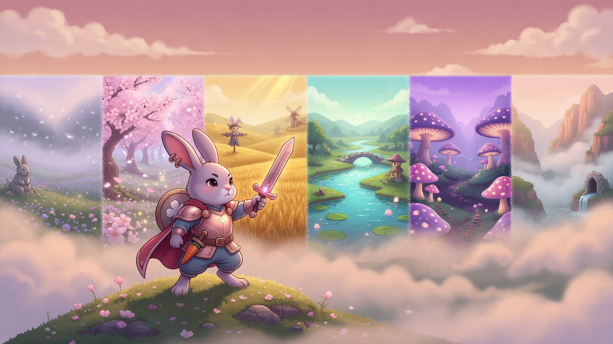
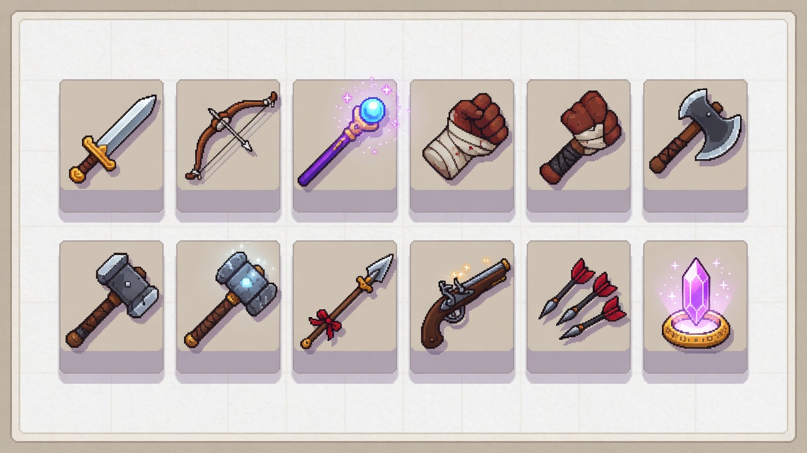

官方 v0.13
一隻不慕強權的兔子
以器／魂／招走過六域
十種武器流派、鍛造與星途觀星、自由路線。主線可不登入；連線可選加厚。
帳號／開始
武器流派
養成系統
探索官網
每則說明都是獨立頁面（非一頁捲完）

武器流派（10）
劍弓法拳斧鎚槍銃鏢晶
優缺點完整表
養成系統
星途觀星
器／魂／招是什麼
遊戲指南
新手節奏 · 操作 · Boss
畫面圖庫
截圖 · 概念圖 · 新 NPC
帳號
OAuth
Email · Google · GitHub
一句話釐清
星途觀星
＝原本戰魂／抽魂設計的去轉蛋版（星屑→觀星→入魂），不是職業。
鐵骨
舊名已廢；血防向請選
鎚
或
水晶
流派。
方塊 NPC
＝缺貼圖；絲絨／琥珀／浪人／遺孤已補進遊戲資源。